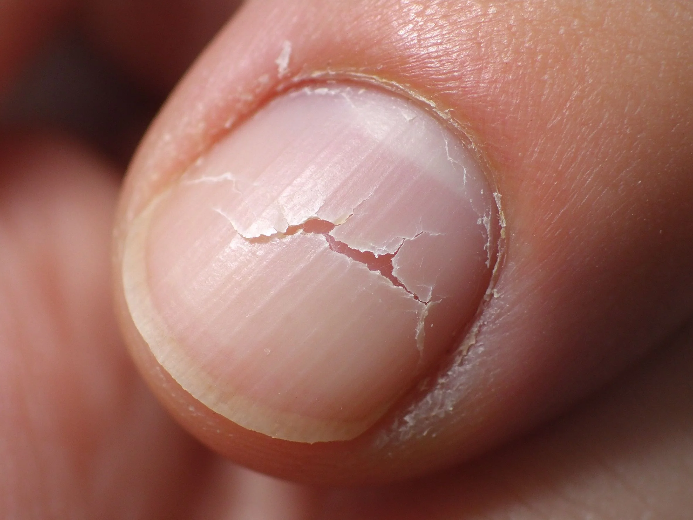

美甲脆甲是什麼？入門入門攻略
脆甲就是「乾到會裂、折一下就斷」，不是你運氣差，是指甲一直在缺水缺油。
脆甲原理與辨識重點：美甲師不說的少碰水
指甲本身是一層層角質堆出來的，健康的時候是有彈性、半透明的粉紅色。如果長期碰水、洗碗不戴手套、常洗頭、或卸甲太頻繁，角質裡的水分和油脂流失，甲面就會變白、變乾、邊緣出現小裂縫，稍微敲到就斷。
誰適合做脆甲？易斷甲對號入座
家庭主婦、護理人員、美容師、長期碰清潔劑的人最容易有脆甲；冬天氣候乾燥或常洗手的上班族也會明顯變差。
脆甲美甲施作步驟：硬甲油＋強化
先習慣「碰水就戴手套」→ 每天早晚擦指緣油（尤其指根和邊緣）→ 一週擦 2–3 次硬甲油（Nail Hardener）→ 指甲剪短修成方圓型（最不容易斷）→ 一兩個月後甲面會變厚、變有光澤。
脆甲優缺點分析：美甲持久度與傷甲評估
| 優點 | 說明 |
|---|---|
| 養好的脆甲可以從「一碰就斷」回到「正常留長 2–3 毫米」，外觀也會變亮。 | 是通用流派的招牌，入門就能上手 |
| 缺點 | 說明 |
| 養甲要 1–3 個月才有感，不是擦幾天就立刻變硬，要有耐心。 | 前置與別把指甲當工具用——開飲料、撕標籤、摳東西都用指緣去撞，脆甲立刻裂。也別一看到裂就用剪刀硬剪，那會讓裂縫繼續延伸。沒顧好會打折 |

脆甲新手雷區：擦硬甲油與常見錯誤
注意：別把指甲當工具用——開飲料、撕標籤、摳東西都用指緣去撞，脆甲立刻裂。也別一看到裂就用剪刀硬剪，那會讓裂縫繼續延伸。
脆甲和其他美甲做法的差別比較
「脆甲」跟「分層」不一樣：脆甲是整片變乾、易斷；分層是甲面一層一層翹起來。脆甲要補水加油，分層要避免磨甲面、不要拋光太大力。
脆甲美甲常見問題 FAQ
Q：吃保健食品（生物素）真的有用嗎？ A：少數人有用，但效果因人而異。與其花錢買保健品，先把「戴手套＋擦油」這兩件事做好，CP 值高非常多。
Q：硬甲油可以天天擦嗎？ A：建議一週 2–3 次，連擦一個月停一週。有些硬甲油含甲醛類成分，長期天天擦反而讓甲變硬變脆。
Q：什麼狀況要去看醫生？ A：如果伴隨甲面變形、出現深色直紋、指甲跟甲床分離，或伴隨掉髮、皮膚病灶，可能是甲癬或其他疾病，要找皮膚科。